<!DOCTYPE html>
<html><head><title>21. Multi-Version Concurrency Control (Bigdata and Knowledge Management Systems 1, SNU GSDS)</title><meta charSet="utf-8"/><meta name="viewport" content="width=device-width, initial-scale=1.0"/><meta property="og:title" content="21. Multi-Version Concurrency Control (Bigdata and Knowledge Management Systems 1, SNU GSDS)"/><meta property="og:description" content="서울대학교 데이터사이언스대학원 정형수 교수님의 &amp;quot;데이터사이언스 응용을 위한 빅데이터 및 지식 관리 시스템&amp;quot; 강의를 필기한 내용입니다. 목차 MVCC § MVCC 는 PCC 나 OCC 와는 무관한 design principle 이고, DBMS 에서는 MVCC 위에다가 PCC, OCC 를 구현한다."/><meta property="og:image" content="https://mdg.haeramk.im/static/og-image.png"/><meta property="og:width" content="1200"/><meta property="og:height" content="675"/><link rel="icon" href="../../../../../static/icon.png"/><meta name="description" content="서울대학교 데이터사이언스대학원 정형수 교수님의 &amp;quot;데이터사이언스 응용을 위한 빅데이터 및 지식 관리 시스템&amp;quot; 강의를 필기한 내용입니다. 목차 MVCC § MVCC 는 PCC 나 OCC 와는 무관한 design principle 이고, DBMS 에서는 MVCC 위에다가 PCC, OCC 를 구현한다."/><meta name="generator" content="Quartz"/><link rel="preconnect" href="https://fonts.googleapis.com"/><link rel="preconnect" href="https://fonts.gstatic.com"/><link href="../../../../../index.css" rel="stylesheet" type="text/css" spa-preserve/><link href="https://cdn.jsdelivr.net/npm/katex@0.16.0/dist/katex.min.css" rel="stylesheet" type="text/css" spa-preserve/><link href="https://fonts.googleapis.com/css2?family=IBM Plex Mono&amp;family=Gowun Batang:wght@400;700&amp;family=Gowun Dodum:ital,wght@0,400;0,600;1,400;1,600&amp;display=swap" rel="stylesheet" type="text/css" spa-preserve/><script src="../../../../../prescript.js" type="application/javascript" spa-preserve></script><script type="application/javascript" spa-preserve>const fetchData = fetch(`../../../../../static/contentIndex.json`).then(data => data.json())</script></head><body data-slug="gardens/database/originals/bkms01.fall.2024.gsds.snu.ac.kr/lectures/21.-Multi-Version-Concurrency-Control"><div id="quartz-root" class="page"><div id="quartz-body"><div class="left sidebar"><h1 class="page-title "><a href="../../../../..">Madison Digital Garden</a></h1><div class="spacer mobile-only"></div><div class="search "><div id="search-icon"><p>Search</p><div></div><svg tabIndex="0" aria-labelledby="title desc" role="img" xmlns="http://www.w3.org/2000/svg" viewBox="0 0 19.9 19.7"><title id="title">Search</title><desc id="desc">Search</desc><g class="search-path" fill="none"><path stroke-linecap="square" d="M18.5 18.3l-5.4-5.4"></path><circle cx="8" cy="8" r="7"></circle></g></svg></div><div id="search-container"><div id="search-space"><input autocomplete="off" id="search-bar" name="search" type="text" aria-label="Search for something" placeholder="Search for something"/><div id="results-container"></div></div></div></div><div class="darkmode "><input class="toggle" id="darkmode-toggle" type="checkbox" tabIndex="-1"/><label id="toggle-label-light" for="darkmode-toggle" tabIndex="-1"><svg xmlns="http://www.w3.org/2000/svg" xmlnsXlink="http://www.w3.org/1999/xlink" version="1.1" id="dayIcon" x="0px" y="0px" viewBox="0 0 35 35" style="enable-background:new 0 0 35 35;" xmlSpace="preserve"><title>Light mode</title><path d="M6,17.5C6,16.672,5.328,16,4.5,16h-3C0.672,16,0,16.672,0,17.5    S0.672,19,1.5,19h3C5.328,19,6,18.328,6,17.5z M7.5,26c-0.414,0-0.789,0.168-1.061,0.439l-2,2C4.168,28.711,4,29.086,4,29.5    C4,30.328,4.671,31,5.5,31c0.414,0,0.789-0.168,1.06-0.44l2-2C8.832,28.289,9,27.914,9,27.5C9,26.672,8.329,26,7.5,26z M17.5,6    C18.329,6,19,5.328,19,4.5v-3C19,0.672,18.329,0,17.5,0S16,0.672,16,1.5v3C16,5.328,16.671,6,17.5,6z M27.5,9    c0.414,0,0.789-0.168,1.06-0.439l2-2C30.832,6.289,31,5.914,31,5.5C31,4.672,30.329,4,29.5,4c-0.414,0-0.789,0.168-1.061,0.44    l-2,2C26.168,6.711,26,7.086,26,7.5C26,8.328,26.671,9,27.5,9z M6.439,8.561C6.711,8.832,7.086,9,7.5,9C8.328,9,9,8.328,9,7.5    c0-0.414-0.168-0.789-0.439-1.061l-2-2C6.289,4.168,5.914,4,5.5,4C4.672,4,4,4.672,4,5.5c0,0.414,0.168,0.789,0.439,1.06    L6.439,8.561z M33.5,16h-3c-0.828,0-1.5,0.672-1.5,1.5s0.672,1.5,1.5,1.5h3c0.828,0,1.5-0.672,1.5-1.5S34.328,16,33.5,16z     M28.561,26.439C28.289,26.168,27.914,26,27.5,26c-0.828,0-1.5,0.672-1.5,1.5c0,0.414,0.168,0.789,0.439,1.06l2,2    C28.711,30.832,29.086,31,29.5,31c0.828,0,1.5-0.672,1.5-1.5c0-0.414-0.168-0.789-0.439-1.061L28.561,26.439z M17.5,29    c-0.829,0-1.5,0.672-1.5,1.5v3c0,0.828,0.671,1.5,1.5,1.5s1.5-0.672,1.5-1.5v-3C19,29.672,18.329,29,17.5,29z M17.5,7    C11.71,7,7,11.71,7,17.5S11.71,28,17.5,28S28,23.29,28,17.5S23.29,7,17.5,7z M17.5,25c-4.136,0-7.5-3.364-7.5-7.5    c0-4.136,3.364-7.5,7.5-7.5c4.136,0,7.5,3.364,7.5,7.5C25,21.636,21.636,25,17.5,25z"></path></svg></label><label id="toggle-label-dark" for="darkmode-toggle" tabIndex="-1"><svg xmlns="http://www.w3.org/2000/svg" xmlnsXlink="http://www.w3.org/1999/xlink" version="1.1" id="nightIcon" x="0px" y="0px" viewBox="0 0 100 100" style="enable-background='new 0 0 100 100'" xmlSpace="preserve"><title>Dark mode</title><path d="M96.76,66.458c-0.853-0.852-2.15-1.064-3.23-0.534c-6.063,2.991-12.858,4.571-19.655,4.571  C62.022,70.495,50.88,65.88,42.5,57.5C29.043,44.043,25.658,23.536,34.076,6.47c0.532-1.08,0.318-2.379-0.534-3.23  c-0.851-0.852-2.15-1.064-3.23-0.534c-4.918,2.427-9.375,5.619-13.246,9.491c-9.447,9.447-14.65,22.008-14.65,35.369  c0,13.36,5.203,25.921,14.65,35.368s22.008,14.65,35.368,14.65c13.361,0,25.921-5.203,35.369-14.65  c3.872-3.871,7.064-8.328,9.491-13.246C97.826,68.608,97.611,67.309,96.76,66.458z"></path></svg></label></div></div><div class="center"><div class="page-header"><div class="popover-hint"><h1 class="article-title ">21. Multi-Version Concurrency Control (Bigdata and Knowledge Management Systems 1, SNU GSDS)</h1><p class="content-meta ">Nov 27, 2024, 15 min read</p><ul class="tags "><li><a href="../../../../../tags/database" class="internal tag-link">#database</a></li><li><a href="../../../../../tags/originals" class="internal tag-link">#originals</a></li><li><a href="../../../../../tags/snu-bkms24f" class="internal tag-link">#snu-bkms24f</a></li></ul></div></div><article class="popover-hint"><blockquote class="callout" data-callout="info">
<div class="callout-title">
                  <div class="callout-icon"><svg xmlns="http://www.w3.org/2000/svg" width="100%" height="100%" viewBox="0 0 24 24" fill="none" stroke="currentColor" stroke-width="2" stroke-linecap="round" stroke-linejoin="round"><circle cx="12" cy="12" r="10"></circle><line x1="12" y1="16" x2="12" y2="12"></line><line x1="12" y1="8" x2="12.01" y2="8"></line></svg></div>
                  <div class="callout-title-inner"><p>서울대학교 데이터사이언스대학원 정형수 교수님의 &quot;데이터사이언스 응용을 위한 빅데이터 및 지식 관리 시스템&quot; 강의를 필기한 내용입니다. </p></div>
                  
                </div>
<ul>
<li><a href="../../../../../gardens/database/originals/bkms01.fall.2024.gsds.snu.ac.kr/(SNU-GSDS)-Bigdata-and-Knowledge-Management-Systems-1" class="internal" data-slug="gardens/database/originals/bkms01.fall.2024.gsds.snu.ac.kr/(SNU-GSDS)-Bigdata-and-Knowledge-Management-Systems-1">목차</a></li>
</ul>
</blockquote>
<h2 id="mvcc">MVCC<a aria-hidden="true" tabindex="-1" href="#mvcc" class="internal"> §</a></h2>
<ul>
<li>MVCC 는 PCC 나 OCC 와는 무관한 design principle 이고, DBMS 에서는 MVCC 위에다가 PCC, OCC 를 구현한다.
<ul>
<li>PCC, OCC 는 모두 concurrency control protocol 이고, MVCC 에서는 얘네들 중 하나를 골라 같이 사용한다.</li>
</ul>
</li>
</ul>
<p>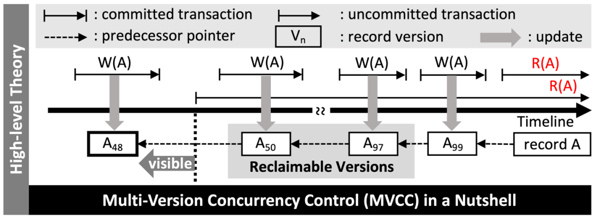</p>
<ul>
<li>알다시피 MVCC 에서는 single logical object 에 대해 여러 version 의 multiple physical object 가 있다.
<ul>
<li>Txn 이 write 를 할때는 해당 object 에 대한 새로운 version 을 만들게 된다.</li>
</ul>
</li>
<li>Txn 시작시에 snaphot 을 할당받게 되고, 이것으로 내가 어떤 version 을 읽을 수 있는지 (즉, <em>Visibility</em>) 결정한다.
<ul>
<li>이 snapshot 은 단순하게는 timestamp 라고 생각해도 되고</li>
<li>PostgreSQL 에서는 xid (txn ID) 및 같이 실행되고 있는 xid 들을 snapshot 으로 받게 된다.</li>
<li>Snapshot 이라는 이름처럼 시간이 멈춰있는 효과를 주기 위함이다.</li>
</ul>
</li>
<li>MVCC 는 RW 간의 block 이 없기 때문에 아주 빠르다.
<ul>
<li>다만 WW blocking 은 있다. WW conflict 의 경우에는 PCC 를 사용한다면 block 되고, OCC 를 사용한다면 일단 실행 후 validation phase 에서 처리된다.</li>
</ul>
</li>
</ul>
<h2 id="mvcc-example">MVCC Example<a aria-hidden="true" tabindex="-1" href="#mvcc-example" class="internal"> §</a></h2>
<ul>
<li>다음의 <span class="math math-inline"><span class="katex"><span class="katex-html" aria-hidden="true"><span class="base"><span class="strut" style="height:0.6833em;"></span><span class="mord mathnormal">A</span></span></span></span></span> 에 접근하는 txn <span class="math math-inline"><span class="katex"><span class="katex-html" aria-hidden="true"><span class="base"><span class="strut" style="height:0.8333em;vertical-align:-0.15em;"></span><span class="mord"><span class="mord mathnormal" style="margin-right:0.13889em;">T</span><span class="msupsub"><span class="vlist-t vlist-t2"><span class="vlist-r"><span class="vlist" style="height:0.3011em;"><span style="top:-2.55em;margin-left:-0.1389em;margin-right:0.05em;"><span class="pstrut" style="height:2.7em;"></span><span class="sizing reset-size6 size3 mtight"><span class="mord mtight"><span class="mord mtight">1</span></span></span></span></span><span class="vlist-s">​</span></span><span class="vlist-r"><span class="vlist" style="height:0.15em;"><span></span></span></span></span></span></span></span></span></span></span> 와 <span class="math math-inline"><span class="katex"><span class="katex-html" aria-hidden="true"><span class="base"><span class="strut" style="height:0.8333em;vertical-align:-0.15em;"></span><span class="mord"><span class="mord mathnormal" style="margin-right:0.13889em;">T</span><span class="msupsub"><span class="vlist-t vlist-t2"><span class="vlist-r"><span class="vlist" style="height:0.3011em;"><span style="top:-2.55em;margin-left:-0.1389em;margin-right:0.05em;"><span class="pstrut" style="height:2.7em;"></span><span class="sizing reset-size6 size3 mtight"><span class="mord mtight"><span class="mord mtight">2</span></span></span></span></span><span class="vlist-s">​</span></span><span class="vlist-r"><span class="vlist" style="height:0.15em;"><span></span></span></span></span></span></span></span></span></span></span> 을 살펴보자.</li>
<li>우선 <span class="math math-inline"><span class="katex"><span class="katex-html" aria-hidden="true"><span class="base"><span class="strut" style="height:1em;vertical-align:-0.25em;"></span><span class="mord mathnormal" style="margin-right:0.13889em;">W</span><span class="mopen">(</span><span class="mord"><span class="mord mathnormal" style="margin-right:0.13889em;">T</span><span class="msupsub"><span class="vlist-t vlist-t2"><span class="vlist-r"><span class="vlist" style="height:0.3011em;"><span style="top:-2.55em;margin-left:-0.1389em;margin-right:0.05em;"><span class="pstrut" style="height:2.7em;"></span><span class="sizing reset-size6 size3 mtight"><span class="mord mtight"><span class="mord mtight">1</span></span></span></span></span><span class="vlist-s">​</span></span><span class="vlist-r"><span class="vlist" style="height:0.15em;"><span></span></span></span></span></span></span><span class="mpunct">,</span><span class="mspace" style="margin-right:0.1667em;"></span><span class="mord mathnormal">A</span><span class="mclose">)</span></span></span></span></span> 는 새로운 version <span class="math math-inline"><span class="katex"><span class="katex-html" aria-hidden="true"><span class="base"><span class="strut" style="height:0.8333em;vertical-align:-0.15em;"></span><span class="mord"><span class="mord mathnormal">A</span><span class="msupsub"><span class="vlist-t vlist-t2"><span class="vlist-r"><span class="vlist" style="height:0.3011em;"><span style="top:-2.55em;margin-left:0em;margin-right:0.05em;"><span class="pstrut" style="height:2.7em;"></span><span class="sizing reset-size6 size3 mtight"><span class="mord mtight"><span class="mord mtight">1</span></span></span></span></span><span class="vlist-s">​</span></span><span class="vlist-r"><span class="vlist" style="height:0.15em;"><span></span></span></span></span></span></span></span></span></span></span> 을 만들고 <span class="math math-inline"><span class="katex"><span class="katex-html" aria-hidden="true"><span class="base"><span class="strut" style="height:0.8333em;vertical-align:-0.15em;"></span><span class="mord"><span class="mord mathnormal">A</span><span class="msupsub"><span class="vlist-t vlist-t2"><span class="vlist-r"><span class="vlist" style="height:0.3011em;"><span style="top:-2.55em;margin-left:0em;margin-right:0.05em;"><span class="pstrut" style="height:2.7em;"></span><span class="sizing reset-size6 size3 mtight"><span class="mord mtight"><span class="mord mtight">0</span></span></span></span></span><span class="vlist-s">​</span></span><span class="vlist-r"><span class="vlist" style="height:0.15em;"><span></span></span></span></span></span></span></span></span></span></span> 의 <span class="math math-inline"><span class="katex"><span class="katex-html" aria-hidden="true"><span class="base"><span class="strut" style="height:1em;vertical-align:-0.25em;"></span><span class="mord mathnormal" style="margin-right:0.13889em;">T</span><span class="mord"><span class="mord mathnormal" style="margin-right:0.05764em;">S</span><span class="msupsub"><span class="vlist-t vlist-t2"><span class="vlist-r"><span class="vlist" style="height:0.3283em;"><span style="top:-2.55em;margin-left:-0.0576em;margin-right:0.05em;"><span class="pstrut" style="height:2.7em;"></span><span class="sizing reset-size6 size3 mtight"><span class="mord mtight"><span class="mord mathnormal mtight" style="margin-right:0.10903em;">EN</span><span class="mord mathnormal mtight" style="margin-right:0.02778em;">D</span></span></span></span></span><span class="vlist-s">​</span></span><span class="vlist-r"><span class="vlist" style="height:0.15em;"><span></span></span></span></span></span></span><span class="mopen">(</span><span class="mord"><span class="mord mathnormal">A</span><span class="msupsub"><span class="vlist-t vlist-t2"><span class="vlist-r"><span class="vlist" style="height:0.3011em;"><span style="top:-2.55em;margin-left:0em;margin-right:0.05em;"><span class="pstrut" style="height:2.7em;"></span><span class="sizing reset-size6 size3 mtight"><span class="mord mtight"><span class="mord mtight">0</span></span></span></span></span><span class="vlist-s">​</span></span><span class="vlist-r"><span class="vlist" style="height:0.15em;"><span></span></span></span></span></span></span><span class="mclose">)</span></span></span></span></span> 에다가는 <span class="math math-inline"><span class="katex"><span class="katex-html" aria-hidden="true"><span class="base"><span class="strut" style="height:1em;vertical-align:-0.25em;"></span><span class="mord mathnormal" style="margin-right:0.05764em;">TS</span><span class="mopen">(</span><span class="mord"><span class="mord mathnormal" style="margin-right:0.13889em;">T</span><span class="msupsub"><span class="vlist-t vlist-t2"><span class="vlist-r"><span class="vlist" style="height:0.3011em;"><span style="top:-2.55em;margin-left:-0.1389em;margin-right:0.05em;"><span class="pstrut" style="height:2.7em;"></span><span class="sizing reset-size6 size3 mtight"><span class="mord mtight"><span class="mord mtight">1</span></span></span></span></span><span class="vlist-s">​</span></span><span class="vlist-r"><span class="vlist" style="height:0.15em;"><span></span></span></span></span></span></span><span class="mclose">)</span><span class="mspace" style="margin-right:0.2778em;"></span><span class="mrel">=</span><span class="mspace" style="margin-right:0.2778em;"></span></span><span class="base"><span class="strut" style="height:0.6444em;"></span><span class="mord">1</span></span></span></span></span> 을 적는다.</li>
</ul>
<p>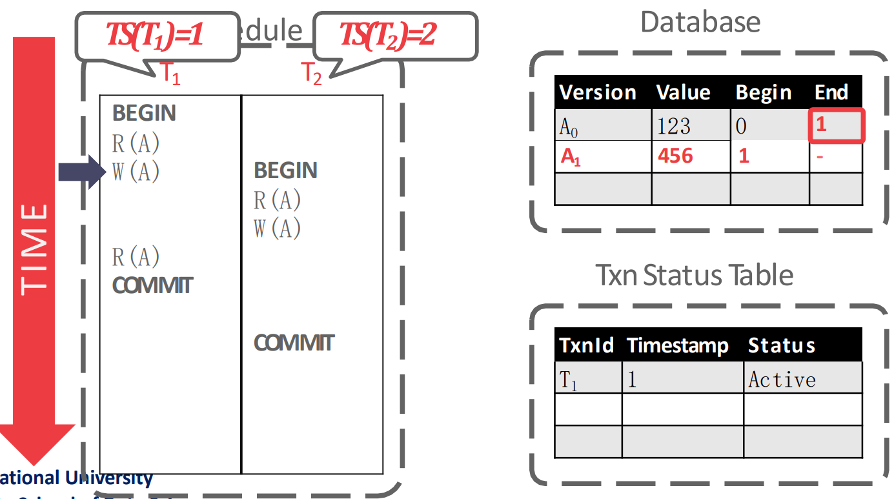</p>
<ul>
<li>다음으로 <span class="math math-inline"><span class="katex"><span class="katex-html" aria-hidden="true"><span class="base"><span class="strut" style="height:1em;vertical-align:-0.25em;"></span><span class="mord mathnormal" style="margin-right:0.00773em;">R</span><span class="mopen">(</span><span class="mord"><span class="mord mathnormal" style="margin-right:0.13889em;">T</span><span class="msupsub"><span class="vlist-t vlist-t2"><span class="vlist-r"><span class="vlist" style="height:0.3011em;"><span style="top:-2.55em;margin-left:-0.1389em;margin-right:0.05em;"><span class="pstrut" style="height:2.7em;"></span><span class="sizing reset-size6 size3 mtight"><span class="mord mtight"><span class="mord mtight">2</span></span></span></span></span><span class="vlist-s">​</span></span><span class="vlist-r"><span class="vlist" style="height:0.15em;"><span></span></span></span></span></span></span><span class="mpunct">,</span><span class="mspace" style="margin-right:0.1667em;"></span><span class="mord mathnormal">A</span><span class="mclose">)</span></span></span></span></span> 를 처리할 때는 <span class="math math-inline"><span class="katex"><span class="katex-html" aria-hidden="true"><span class="base"><span class="strut" style="height:0.8333em;vertical-align:-0.15em;"></span><span class="mord"><span class="mord mathnormal">A</span><span class="msupsub"><span class="vlist-t vlist-t2"><span class="vlist-r"><span class="vlist" style="height:0.3011em;"><span style="top:-2.55em;margin-left:0em;margin-right:0.05em;"><span class="pstrut" style="height:2.7em;"></span><span class="sizing reset-size6 size3 mtight"><span class="mord mtight"><span class="mord mtight">0</span></span></span></span></span><span class="vlist-s">​</span></span><span class="vlist-r"><span class="vlist" style="height:0.15em;"><span></span></span></span></span></span></span></span></span></span></span> 를 읽게 된다.
<ul>
<li>왜냐면 Txn status table 을 봤을때 <span class="math math-inline"><span class="katex"><span class="katex-html" aria-hidden="true"><span class="base"><span class="strut" style="height:0.8333em;vertical-align:-0.15em;"></span><span class="mord"><span class="mord mathnormal" style="margin-right:0.13889em;">T</span><span class="msupsub"><span class="vlist-t vlist-t2"><span class="vlist-r"><span class="vlist" style="height:0.3011em;"><span style="top:-2.55em;margin-left:-0.1389em;margin-right:0.05em;"><span class="pstrut" style="height:2.7em;"></span><span class="sizing reset-size6 size3 mtight"><span class="mord mtight"><span class="mord mtight">1</span></span></span></span></span><span class="vlist-s">​</span></span><span class="vlist-r"><span class="vlist" style="height:0.15em;"><span></span></span></span></span></span></span></span></span></span></span> 이 아직 살아있기 때문.</li>
</ul>
</li>
</ul>
<p>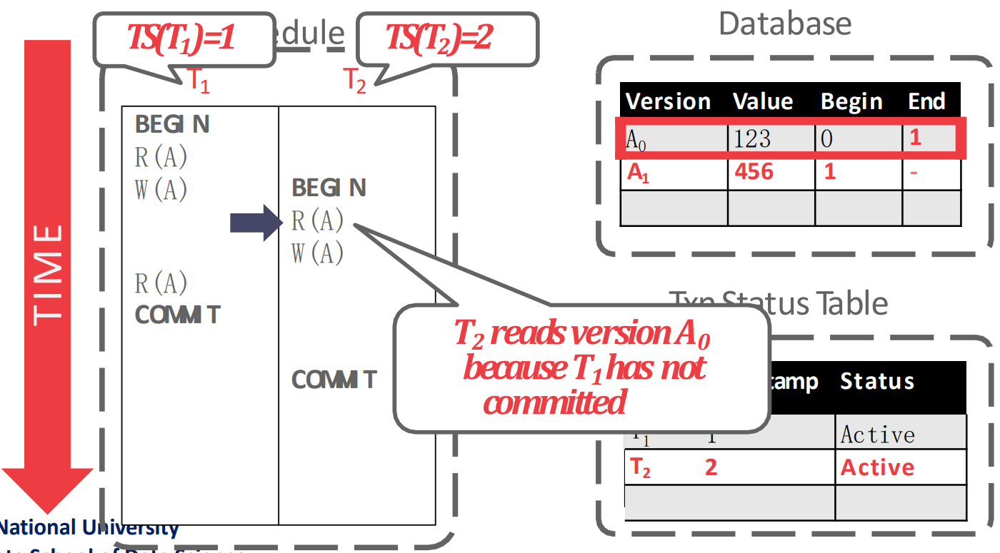</p>
<ul>
<li>그리고 <span class="math math-inline"><span class="katex"><span class="katex-html" aria-hidden="true"><span class="base"><span class="strut" style="height:1em;vertical-align:-0.25em;"></span><span class="mord mathnormal" style="margin-right:0.13889em;">W</span><span class="mopen">(</span><span class="mord"><span class="mord mathnormal" style="margin-right:0.13889em;">T</span><span class="msupsub"><span class="vlist-t vlist-t2"><span class="vlist-r"><span class="vlist" style="height:0.3011em;"><span style="top:-2.55em;margin-left:-0.1389em;margin-right:0.05em;"><span class="pstrut" style="height:2.7em;"></span><span class="sizing reset-size6 size3 mtight"><span class="mord mtight"><span class="mord mtight">2</span></span></span></span></span><span class="vlist-s">​</span></span><span class="vlist-r"><span class="vlist" style="height:0.15em;"><span></span></span></span></span></span></span><span class="mpunct">,</span><span class="mspace" style="margin-right:0.1667em;"></span><span class="mord mathnormal">A</span><span class="mclose">)</span></span></span></span></span> 를 처리할 때는 stall 된다.
<ul>
<li>이것도 Txn status table 을 봤을때 <span class="math math-inline"><span class="katex"><span class="katex-html" aria-hidden="true"><span class="base"><span class="strut" style="height:0.8333em;vertical-align:-0.15em;"></span><span class="mord"><span class="mord mathnormal" style="margin-right:0.13889em;">T</span><span class="msupsub"><span class="vlist-t vlist-t2"><span class="vlist-r"><span class="vlist" style="height:0.3011em;"><span style="top:-2.55em;margin-left:-0.1389em;margin-right:0.05em;"><span class="pstrut" style="height:2.7em;"></span><span class="sizing reset-size6 size3 mtight"><span class="mord mtight"><span class="mord mtight">1</span></span></span></span></span><span class="vlist-s">​</span></span><span class="vlist-r"><span class="vlist" style="height:0.15em;"><span></span></span></span></span></span></span></span></span></span></span> 이 아직 살아있기 때문.</li>
<li>여기서 PCC 를 사용했을 때랑 OCC 를 사용했을 때가 나뉘게 된다. PCC 에서는 block 되고, OCC 에서는 local workspace 에 적고 나중에 validation 에서 처리된다.</li>
</ul>
</li>
</ul>
<p>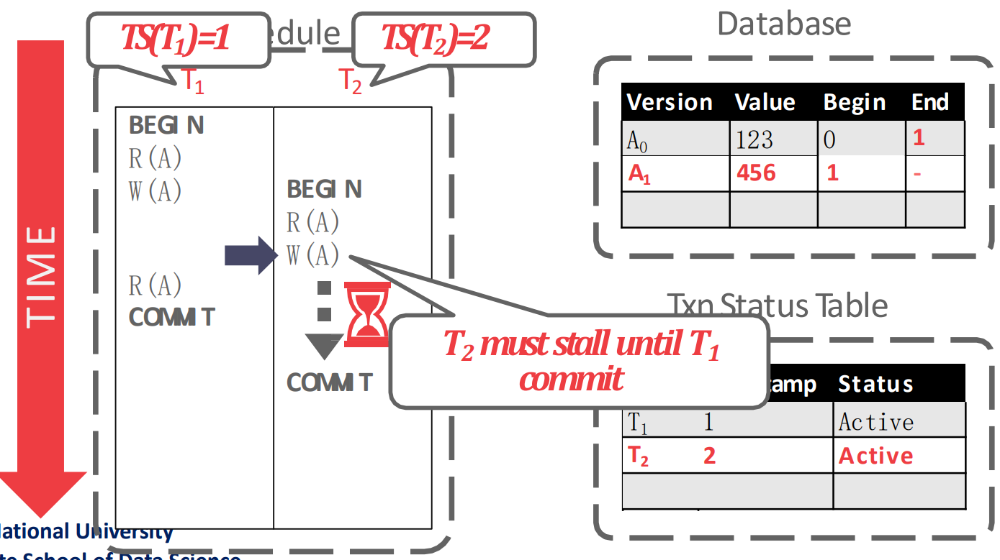</p>
<ul>
<li>R(T_{1},A) 에서는 본인이 생성한 version 인 A_{1} 를 읽어간다.</li>
</ul>
<p>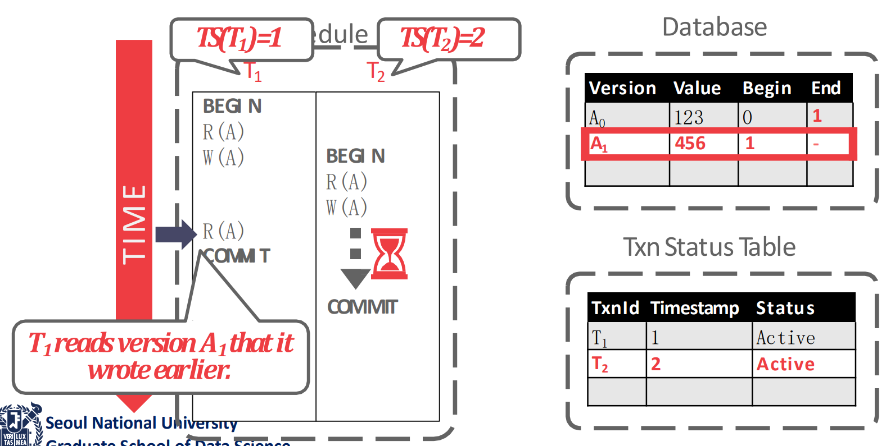</p>
<ul>
<li><span class="math math-inline"><span class="katex"><span class="katex-html" aria-hidden="true"><span class="base"><span class="strut" style="height:0.8333em;vertical-align:-0.15em;"></span><span class="mord"><span class="mord mathnormal" style="margin-right:0.13889em;">T</span><span class="msupsub"><span class="vlist-t vlist-t2"><span class="vlist-r"><span class="vlist" style="height:0.3011em;"><span style="top:-2.55em;margin-left:-0.1389em;margin-right:0.05em;"><span class="pstrut" style="height:2.7em;"></span><span class="sizing reset-size6 size3 mtight"><span class="mord mtight"><span class="mord mtight">1</span></span></span></span></span><span class="vlist-s">​</span></span><span class="vlist-r"><span class="vlist" style="height:0.15em;"><span></span></span></span></span></span></span></span></span></span></span> 이 <code>COMMIT</code> 한 뒤에는, (PCC 기준) <span class="math math-inline"><span class="katex"><span class="katex-html" aria-hidden="true"><span class="base"><span class="strut" style="height:0.8333em;vertical-align:-0.15em;"></span><span class="mord"><span class="mord mathnormal" style="margin-right:0.13889em;">T</span><span class="msupsub"><span class="vlist-t vlist-t2"><span class="vlist-r"><span class="vlist" style="height:0.3011em;"><span style="top:-2.55em;margin-left:-0.1389em;margin-right:0.05em;"><span class="pstrut" style="height:2.7em;"></span><span class="sizing reset-size6 size3 mtight"><span class="mord mtight"><span class="mord mtight">2</span></span></span></span></span><span class="vlist-s">​</span></span><span class="vlist-r"><span class="vlist" style="height:0.15em;"><span></span></span></span></span></span></span></span></span></span></span> 의 block 이 풀리고, 그제서야 새로운 version <span class="math math-inline"><span class="katex"><span class="katex-html" aria-hidden="true"><span class="base"><span class="strut" style="height:0.8333em;vertical-align:-0.15em;"></span><span class="mord"><span class="mord mathnormal" style="margin-right:0.13889em;">T</span><span class="msupsub"><span class="vlist-t vlist-t2"><span class="vlist-r"><span class="vlist" style="height:0.3011em;"><span style="top:-2.55em;margin-left:-0.1389em;margin-right:0.05em;"><span class="pstrut" style="height:2.7em;"></span><span class="sizing reset-size6 size3 mtight"><span class="mord mtight"><span class="mord mtight">2</span></span></span></span></span><span class="vlist-s">​</span></span><span class="vlist-r"><span class="vlist" style="height:0.15em;"><span></span></span></span></span></span></span></span></span></span></span> 를 적는 것과 <span class="math math-inline"><span class="katex"><span class="katex-html" aria-hidden="true"><span class="base"><span class="strut" style="height:1em;vertical-align:-0.25em;"></span><span class="mord mathnormal" style="margin-right:0.13889em;">T</span><span class="mord"><span class="mord mathnormal" style="margin-right:0.05764em;">S</span><span class="msupsub"><span class="vlist-t vlist-t2"><span class="vlist-r"><span class="vlist" style="height:0.3283em;"><span style="top:-2.55em;margin-left:-0.0576em;margin-right:0.05em;"><span class="pstrut" style="height:2.7em;"></span><span class="sizing reset-size6 size3 mtight"><span class="mord mtight"><span class="mord mathnormal mtight" style="margin-right:0.10903em;">EN</span><span class="mord mathnormal mtight" style="margin-right:0.02778em;">D</span></span></span></span></span><span class="vlist-s">​</span></span><span class="vlist-r"><span class="vlist" style="height:0.15em;"><span></span></span></span></span></span></span><span class="mopen">(</span><span class="mord"><span class="mord mathnormal">A</span><span class="msupsub"><span class="vlist-t vlist-t2"><span class="vlist-r"><span class="vlist" style="height:0.3011em;"><span style="top:-2.55em;margin-left:0em;margin-right:0.05em;"><span class="pstrut" style="height:2.7em;"></span><span class="sizing reset-size6 size3 mtight"><span class="mord mtight"><span class="mord mtight">1</span></span></span></span></span><span class="vlist-s">​</span></span><span class="vlist-r"><span class="vlist" style="height:0.15em;"><span></span></span></span></span></span></span><span class="mclose">)</span><span class="mspace" style="margin-right:0.2778em;"></span><span class="mrel">=</span><span class="mspace" style="margin-right:0.2778em;"></span></span><span class="base"><span class="strut" style="height:0.6444em;"></span><span class="mord">2</span></span></span></span></span> 로 업데이트하는 작업을 해준다.</li>
</ul>
<p>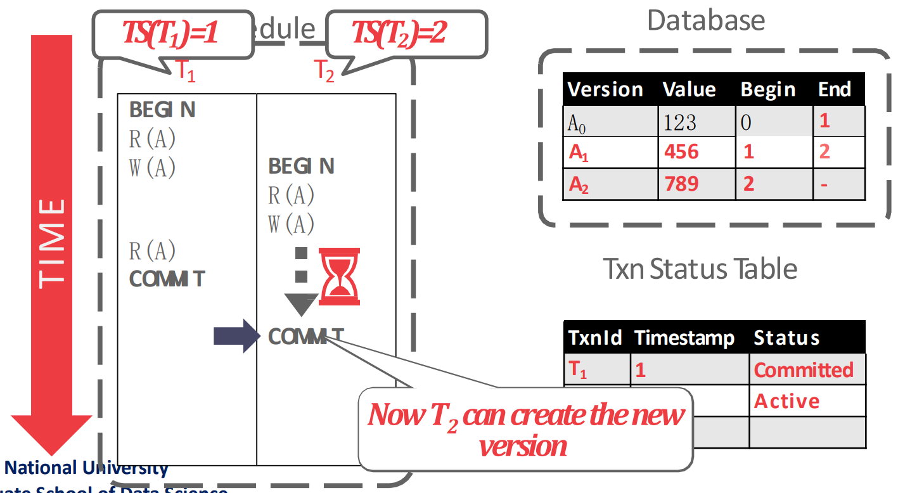</p>
<h2 id="tuple-format">Tuple Format<a aria-hidden="true" tabindex="-1" href="#tuple-format" class="internal"> §</a></h2>
<p>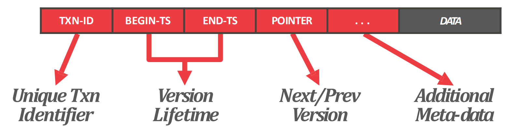</p>
<ul>
<li>위에서 본것처럼 visibility 를 위해서 각 tuple 에는
<ul>
<li><code>TXN_ID</code>: 해당 tuple 을 생성한 txn 의 ID</li>
<li><code>BEGIN_TS</code> (PostgreSQL 에서는 <code>xmin</code>): 이놈을 볼 수 있는 최소 <span class="math math-inline"><span class="katex"><span class="katex-html" aria-hidden="true"><span class="base"><span class="strut" style="height:0.6833em;"></span><span class="mord mathnormal" style="margin-right:0.05764em;">TS</span></span></span></span></span></li>
<li><code>END_TS</code> (PostgreSQL 에서는 <code>xmax</code>): 이놈을 볼 수 있는 최대 <span class="math math-inline"><span class="katex"><span class="katex-html" aria-hidden="true"><span class="base"><span class="strut" style="height:0.6833em;"></span><span class="mord mathnormal" style="margin-right:0.05764em;">TS</span></span></span></span></span>
<ul>
<li>이때 <code>BEGIN_TS</code>, <code>END_TS</code> 를 <em>Visibility Window</em> 혹은 <em>Version Lifetime</em> 이라고 부른다.</li>
</ul>
</li>
<li><code>POINTER</code>: Version chain pointer</li>
</ul>
</li>
<li>가 추가적으로 담긴다.</li>
</ul>
<h2 id="version-storage">Version Storage<a aria-hidden="true" tabindex="-1" href="#version-storage" class="internal"> §</a></h2>
<ul>
<li>우선 version search 를 위한 search structure (version search index) 가 필요하다.
<ul>
<li>저 index 는 primary B+index 와는 다르다.</li>
<li>보통 version chain 으로 관리된다.</li>
<li>당연히 version chain 이 길어지면 search 에 오래걸린다.</li>
<li>또한 B+index 는 이 version chain 의 head 를 가리킨다고 한다.</li>
</ul>
</li>
<li>그리고 이 version 들을 담을 저장공간이 필요한데, 여기에는 여러 choice 들이 있다.</li>
</ul>
<h3 id="storage-layout">Storage Layout<a aria-hidden="true" tabindex="-1" href="#storage-layout" class="internal"> §</a></h3>
<p>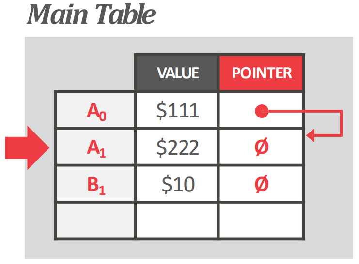</p>
<ul>
<li><em>Append-only</em>, <em>In-row</em>, <em>Full-versioning</em>: Table 에 full version 을 놓고 pointer 는 다음 version 의 table row 를 가리키도록 하는 것
<ul>
<li>단점은 update 가 index SMO 를 유발한다는 것이고</li>
<li>장점은 version 이 바로 옆에 있기 때문에 recovery 가 빠르다</li>
<li>psql 에서 사용 - pvs: persistence version store 라고 부른다</li>
</ul>
</li>
</ul>
<p>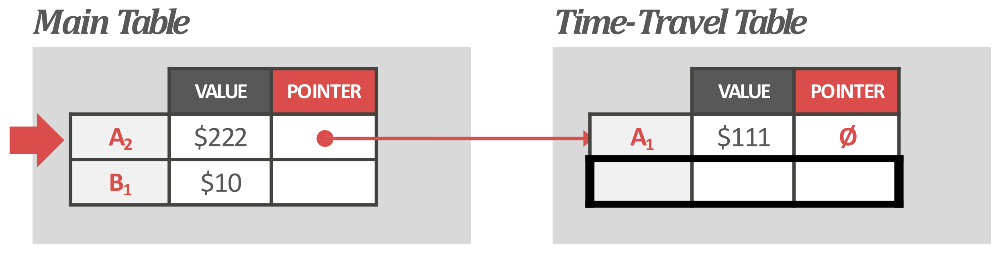</p>
<ul>
<li><em>Off-row</em>, <em>Time-travel storage</em>: version 을 별도의 공간 (Time-travel table) 에 저장하는 것</li>
</ul>
<p>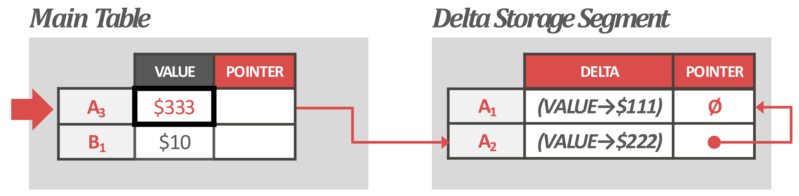</p>
<ul>
<li><em>Delta</em>: 변경된것만 저장하는 것
<ul>
<li>space benefit 이 있지만</li>
<li>delta apply (reconstruct) overhead 가 있다</li>
<li>보통 Off-row 방식을 같이 사용해서 delta 를 별도 space 에 저장한다.
<ul>
<li>이 공간을 undo space 라고 한다</li>
</ul>
</li>
<li>mysql, oracle 등등이 이방식</li>
</ul>
</li>
</ul>
<h3 id="version-order">Version Order<a aria-hidden="true" tabindex="-1" href="#version-order" class="internal"> §</a></h3>
<ul>
<li>Version 을 저장하는 순서에 대해서도 choice 가 있다.
<ul>
<li><em>Old-to-New</em> (<em>O2N</em>): 다음 버전을 가리키는 것</li>
<li><em>New-to-Old</em> (<em>N2O</em>): 이전 버전을 가리키는 것</li>
</ul>
</li>
</ul>
<h3 id="dbmss-choices">DBMS’s Choices<a aria-hidden="true" tabindex="-1" href="#dbmss-choices" class="internal"> §</a></h3>
<p>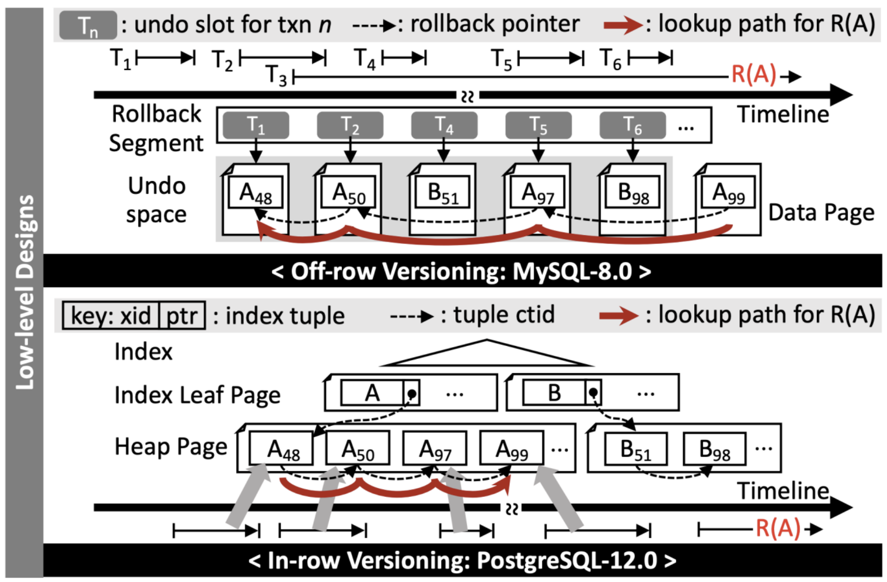</p>
<ul>
<li>그래서 MySQL 하고 PostgreSQL 을 비교해보면 대략 위 그림처럼 정리된다.
<ul>
<li>MySQL 에서는 Off-row, Delta, N2O versioning 을 하고</li>
<li>PostgreSQL 에서는 In-row, Full, O2N versioning 을 한다.</li>
</ul>
</li>
</ul>
<h2 id="gc">GC<a aria-hidden="true" tabindex="-1" href="#gc" class="internal"> §</a></h2>
<ul>
<li>MVCC 에서는 versioning 을 하는 만큼, 오래된 version 들은 지워줄 필요가 있다.</li>
</ul>
<h3 id="gc-target-visibility-dead-zone">GC Target: Visibility, Dead zone<a aria-hidden="true" tabindex="-1" href="#gc-target-visibility-dead-zone" class="internal"> §</a></h3>
<ul>
<li>일단 어떤 tuple 을 볼 수 있는 txn 이 아무도 없으면 걔가 GC target 이 된다.</li>
<li>기본적으로는 그냥 시간이 지나서 tuple 에 접근하는 txn 이 다 없어져서 target 이 되는데,</li>
<li>이것 말고도 다음처럼 version chain 중간에 target 이 되는 경우도 생긴다.</li>
</ul>
<p>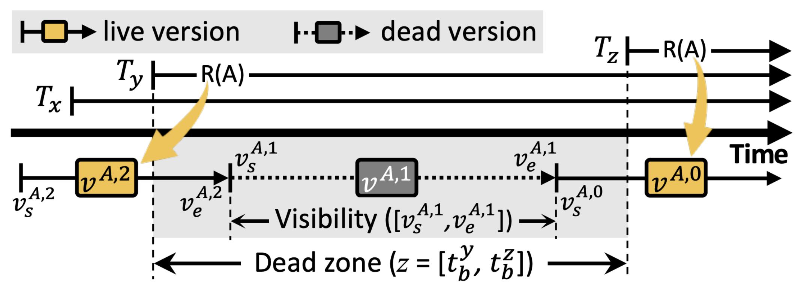</p>
<ul>
<li><em>Dead Zone</em>: 연속된 두개의 txn 의 begin time 들의 time period 를 <em>Dead Zone</em> 이라고 한다.</li>
<li><em>Visibility</em>: 어떤 tuple 의 <code>BEGIN_TS</code> 와 <code>END_TS</code> 사이의 구간은 해당 tuple 을 볼 수 있는 time period 이므로 <em>Visibility</em> 라고 한다.</li>
<li>만약 어떤 tuple 의 visibility 가 저 dead zone 에 들어간다면, 이 tuple 은 아무도 접근하지 못하는 놈이 된다.</li>
<li>이런 tuple 들은 지워주는게 좋지만 아직까지는 별 뾰족한 수가 없다고 한다.
<ul>
<li>논문들이 나오고있긴 하지만 아직까지 해결되지 않은 문제</li>
<li>중간에꺼를 지우고 version chain pointer 를 concurrent 하게 하는 것이 생각보다 쉽지 않고</li>
<li>IO overhead 때문에 naive 하게 하면 성능이 망해버린다고 한다.
<ul>
<li>그래서 in-memory DB 에서는 저런거를 지워주는 기능을 제공하기도 한다.</li>
</ul>
</li>
<li>그래서 지금은 저런 애들도 그냥 냅두고 그냥 옛날의 version 들을 한번에 truncate 할때 같이 GC 되도록 하는 방법을 사용한다.</li>
</ul>
</li>
</ul>
<h3 id="tuple-level-gc">Tuple-level GC<a aria-hidden="true" tabindex="-1" href="#tuple-level-gc" class="internal"> §</a></h3>
<ul>
<li>각 tuple 을 하나하나 보면서 GC 하는 방법을 <em>Tuple-level GC</em> 라고 한다.
<ul>
<li>이것 말고도 txn 들이 자신의 read, write 을 생성하고, 이것을 기반으로 DBMS 가 직접 어떤 version 이 더이상 visible 하지 않는지 판단하여 GC 하는 <em>Transaction-level GC</em> 도 있다고 한다.</li>
</ul>
</li>
<li>여기에도 두가지 방식이 있다:
<ol>
<li>Background Worker</li>
<li>Cooperative Cleaning</li>
</ol>
</li>
</ul>
<h4 id="background-worker">Background Worker<a aria-hidden="true" tabindex="-1" href="#background-worker" class="internal"> §</a></h4>
<ul>
<li>이거는 GC 를 담당하는 worker thread 가 주기적으로 생성돼서 GC 하는 것을 의미한다.</li>
</ul>
<p>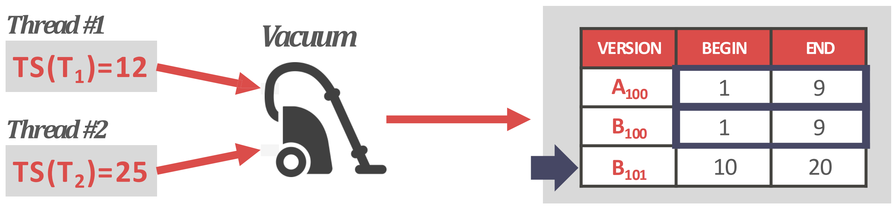</p>
<ul>
<li>위 그림처럼 table 을 쭉 훑으면서 하나하나 GC 를 하거나
<ul>
<li>위 그림에서는 thread 1 이 담당한다고 생각하면 된다.</li>
<li>이놈의 <span class="math math-inline"><span class="katex"><span class="katex-html" aria-hidden="true"><span class="base"><span class="strut" style="height:1em;vertical-align:-0.25em;"></span><span class="mord mathnormal" style="margin-right:0.05764em;">TS</span><span class="mopen">(</span><span class="mord"><span class="mord mathnormal" style="margin-right:0.13889em;">T</span><span class="msupsub"><span class="vlist-t vlist-t2"><span class="vlist-r"><span class="vlist" style="height:0.3011em;"><span style="top:-2.55em;margin-left:-0.1389em;margin-right:0.05em;"><span class="pstrut" style="height:2.7em;"></span><span class="sizing reset-size6 size3 mtight"><span class="mord mtight"><span class="mord mtight">1</span></span></span></span></span><span class="vlist-s">​</span></span><span class="vlist-r"><span class="vlist" style="height:0.15em;"><span></span></span></span></span></span></span><span class="mclose">)</span><span class="mspace" style="margin-right:0.2778em;"></span><span class="mrel">=</span><span class="mspace" style="margin-right:0.2778em;"></span></span><span class="base"><span class="strut" style="height:0.6444em;"></span><span class="mord">12</span></span></span></span></span> 이므로 <span class="math math-inline"><span class="katex"><span class="katex-html" aria-hidden="true"><span class="base"><span class="strut" style="height:1em;vertical-align:-0.25em;"></span><span class="mord mathnormal" style="margin-right:0.13889em;">T</span><span class="mord"><span class="mord mathnormal" style="margin-right:0.05764em;">S</span><span class="msupsub"><span class="vlist-t vlist-t2"><span class="vlist-r"><span class="vlist" style="height:0.3283em;"><span style="top:-2.55em;margin-left:-0.0576em;margin-right:0.05em;"><span class="pstrut" style="height:2.7em;"></span><span class="sizing reset-size6 size3 mtight"><span class="mord mtight"><span class="mord mathnormal mtight" style="margin-right:0.10903em;">EN</span><span class="mord mathnormal mtight" style="margin-right:0.02778em;">D</span></span></span></span></span><span class="vlist-s">​</span></span><span class="vlist-r"><span class="vlist" style="height:0.15em;"><span></span></span></span></span></span></span><span class="mopen">(</span><span class="mord mathnormal" style="margin-right:0.07847em;">X</span><span class="mclose">)</span><span class="mspace" style="margin-right:0.2778em;"></span><span class="mrel">≤</span><span class="mspace" style="margin-right:0.2778em;"></span></span><span class="base"><span class="strut" style="height:0.6444em;"></span><span class="mord">12</span></span></span></span></span> 인 애들을 전부 지우게 된다.</li>
</ul>
</li>
</ul>
<p>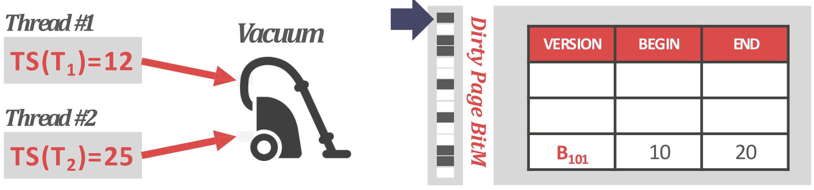</p>
<ul>
<li>아니면 위처럼 bitmap 으로 표시해뒀다가 한번에 지우는 방법도 있다고 한다.</li>
<li>대부분의 DBMS 들이 이런 tuple-level GC 를 한다.
<ul>
<li>PostgreSQL 에서는 <em>Vacuumer</em> 라는 process 가 담당하고</li>
<li>MySQL 에서는 <em>Purger</em> 라는 thread 가 담당한다.</li>
</ul>
</li>
</ul>
<h4 id="cooperative-cleaning">Cooperative Cleaning<a aria-hidden="true" tabindex="-1" href="#cooperative-cleaning" class="internal"> §</a></h4>
<p>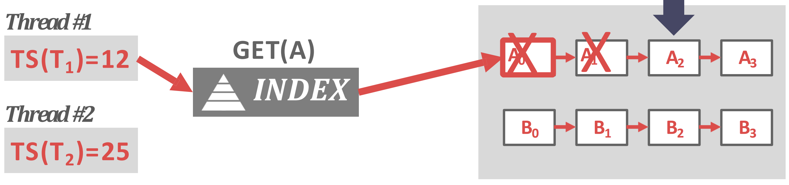</p>
<ul>
<li><em>Cooperative Cleaning</em> 은 별도의 background worker 가 없고, txn worker thread 가 직접 version chain 을 traverse 하면서 지우는 방식이다.
<ul>
<li>즉, 위 그림처럼 txn worker 가 B+index 를 타고 해당 record 로 간 다음에, visible 한 version 을 찾기 위해 chain 을 traverse 할 때 GC 도 같이 해주는 것.</li>
</ul>
</li>
</ul>
<h2 id="snapshot-isolation-si">Snapshot Isolation (SI)<a aria-hidden="true" tabindex="-1" href="#snapshot-isolation-si" class="internal"> §</a></h2>
<ul>
<li><em>Snapshot Isolation</em> (<em>SI</em>) 라는 것은 MVCC 가 제공해주는 또 다른 isolation level 이다.
<ul>
<li>이것은 Repeatable Read 와 유사한 격리 수준을 보여준다고 한다.</li>
</ul>
</li>
</ul>
<h3 id="snapshot-read">Snapshot Read<a aria-hidden="true" tabindex="-1" href="#snapshot-read" class="internal"> §</a></h3>
<ul>
<li><em>Snapshot</em> 은 txn 이 <code>BEGIN</code> 할 때 받게 되고, 이것보다 이전에 commit 된 object 만을 볼 수 있다.</li>
<li>따라서 각 txn 은 “정지화면” 을 보는 듯한 느낌을 받게 되고, 이 정지해 있는 (것처럼 보이는) database 의 모습을 <em>Snapshot Database</em> 라고 한다.</li>
<li>그리고 이 <em>Snapshot Database</em> 만을 읽게 하는 read 정책이 <em>Snapshot Read</em> 이다.</li>
<li>이것은 대부분의 read anomaly 를 해결해준다.
<ul>
<li>Dirty Read: snapshot 기준 commit 된 object 만 볼 수 있기 때문에, uncommitted data 를 읽을 수 없고, 따라서 해당 data 를 사전에 변경한 놈이 abort 되지도 않는다. 따라서 dirty read 는 불가능하다.</li>
<li>Inconsistent Read: 당연히 commit 된 object 만 보므로 read 의 결과는 항상 동일하다.</li>
<li>Phantom Read: 중간에 다른 txn 이 끼어들어서 <code>INSERT</code> 를 해봤자 snapshot 에 의해 걸러져서 안보인다. 따라서 Phantom Read 도 불가능하다.</li>
</ul>
</li>
</ul>
<h3 id="first-committer-wins-rule">First-Committer-Wins Rule<a aria-hidden="true" tabindex="-1" href="#first-committer-wins-rule" class="internal"> §</a></h3>
<ul>
<li>MVCC 에서는 version write 를 하기 때문에 RW conflict 는 무의미하다. 어차피 RW conflict 가 일어나도 내가 write 한 것을 저놈은 못읽기 때문.</li>
<li>하지만 WW conflict 는 유의미하다. 여러 버전 중에 어떤 놈을 취할것이냐에 대한 정책을 정해야 하기 때문.</li>
<li>SI 에서는 이것에 관해 <em>First-Committer-Wins</em> 정책을 사용한다.
<ul>
<li>즉, WW conflict 가 발생했을 때, 먼저 commit 하는 놈이 승자이고, 나머지는 txn 들은 <code>ABORT</code> 된다.</li>
</ul>
</li>
<li>하지만 이건 구현하기가 아무래도 힘들기 때문에, 대부분의 DBMS 에서는 <em>First-Writer-Wins</em> 로 살짝 변형해서 지원한다.
<ul>
<li>즉, 해당 object 에 lock 을 잡고, 이것으로 conflict 를 detect 해서 늦은놈은 전부 <code>ABORT</code> 시키는 것.</li>
<li>물론 OCC 에서처럼 local copy 에 write 를 한 다음에 commit 시점에 validation 을 할 수도 있다. 근데 구현이 복잡해서 별로 선호하지는 않는다고 한다.</li>
</ul>
</li>
</ul>
<h3 id="write-skew">Write Skew<a aria-hidden="true" tabindex="-1" href="#write-skew" class="internal"> §</a></h3>
<ul>
<li>위에서 말한것 처럼, SI 는 Repeatable Read 정도의 isolation level 을 가지고 있다: 이말은, Serializable 은 아니라는 것이고, serialize 할 수 없는 schedule 도 존재한다는 의미이다.</li>
<li>그 상황이 바로 이 <em>Write Skew Anomaly</em> 이다. 그림으로 알아보자.</li>
</ul>
<p>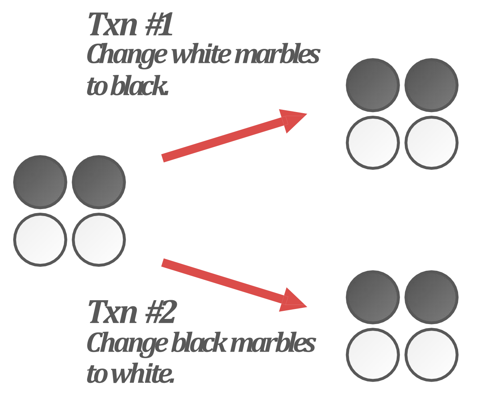</p>
<ul>
<li>위와 같은 example 이 있다고 해보자.
<ul>
<li><span class="math math-inline"><span class="katex"><span class="katex-html" aria-hidden="true"><span class="base"><span class="strut" style="height:0.8333em;vertical-align:-0.15em;"></span><span class="mord"><span class="mord mathnormal" style="margin-right:0.13889em;">T</span><span class="msupsub"><span class="vlist-t vlist-t2"><span class="vlist-r"><span class="vlist" style="height:0.3011em;"><span style="top:-2.55em;margin-left:-0.1389em;margin-right:0.05em;"><span class="pstrut" style="height:2.7em;"></span><span class="sizing reset-size6 size3 mtight"><span class="mord mtight"><span class="mord mtight">1</span></span></span></span></span><span class="vlist-s">​</span></span><span class="vlist-r"><span class="vlist" style="height:0.15em;"><span></span></span></span></span></span></span></span></span></span></span> 은 전부를 읽어 흰색 바둑돌을 검은색으로 바꾸려고 하고, <span class="math math-inline"><span class="katex"><span class="katex-html" aria-hidden="true"><span class="base"><span class="strut" style="height:0.8333em;vertical-align:-0.15em;"></span><span class="mord"><span class="mord mathnormal" style="margin-right:0.13889em;">T</span><span class="msupsub"><span class="vlist-t vlist-t2"><span class="vlist-r"><span class="vlist" style="height:0.3011em;"><span style="top:-2.55em;margin-left:-0.1389em;margin-right:0.05em;"><span class="pstrut" style="height:2.7em;"></span><span class="sizing reset-size6 size3 mtight"><span class="mord mtight"><span class="mord mtight">2</span></span></span></span></span><span class="vlist-s">​</span></span><span class="vlist-r"><span class="vlist" style="height:0.15em;"><span></span></span></span></span></span></span></span></span></span></span> 은 전부를 읽어 검은 바둑돌을 흰색으로 바꾸려고 한다.</li>
</ul>
</li>
<li>만약에 이것을 serial 하게 실행하면
<ul>
<li><span class="math math-inline"><span class="katex"><span class="katex-html" aria-hidden="true"><span class="base"><span class="strut" style="height:0.8333em;vertical-align:-0.15em;"></span><span class="mord"><span class="mord mathnormal" style="margin-right:0.13889em;">T</span><span class="msupsub"><span class="vlist-t vlist-t2"><span class="vlist-r"><span class="vlist" style="height:0.3011em;"><span style="top:-2.55em;margin-left:-0.1389em;margin-right:0.05em;"><span class="pstrut" style="height:2.7em;"></span><span class="sizing reset-size6 size3 mtight"><span class="mord mtight"><span class="mord mtight">1</span></span></span></span></span><span class="vlist-s">​</span></span><span class="vlist-r"><span class="vlist" style="height:0.15em;"><span></span></span></span></span></span></span><span class="mspace" style="margin-right:0.2778em;"></span><span class="mrel">→</span><span class="mspace" style="margin-right:0.2778em;"></span></span><span class="base"><span class="strut" style="height:0.8333em;vertical-align:-0.15em;"></span><span class="mord"><span class="mord mathnormal" style="margin-right:0.13889em;">T</span><span class="msupsub"><span class="vlist-t vlist-t2"><span class="vlist-r"><span class="vlist" style="height:0.3011em;"><span style="top:-2.55em;margin-left:-0.1389em;margin-right:0.05em;"><span class="pstrut" style="height:2.7em;"></span><span class="sizing reset-size6 size3 mtight"><span class="mord mtight"><span class="mord mtight">2</span></span></span></span></span><span class="vlist-s">​</span></span><span class="vlist-r"><span class="vlist" style="height:0.15em;"><span></span></span></span></span></span></span></span></span></span></span> 로 실행하면 <span class="math math-inline"><span class="katex"><span class="katex-html" aria-hidden="true"><span class="base"><span class="strut" style="height:0.8333em;vertical-align:-0.15em;"></span><span class="mord"><span class="mord mathnormal" style="margin-right:0.13889em;">T</span><span class="msupsub"><span class="vlist-t vlist-t2"><span class="vlist-r"><span class="vlist" style="height:0.3011em;"><span style="top:-2.55em;margin-left:-0.1389em;margin-right:0.05em;"><span class="pstrut" style="height:2.7em;"></span><span class="sizing reset-size6 size3 mtight"><span class="mord mtight"><span class="mord mtight">1</span></span></span></span></span><span class="vlist-s">​</span></span><span class="vlist-r"><span class="vlist" style="height:0.15em;"><span></span></span></span></span></span></span></span></span></span></span> 이 전부 검은색으로 바꿨다가 <span class="math math-inline"><span class="katex"><span class="katex-html" aria-hidden="true"><span class="base"><span class="strut" style="height:0.8333em;vertical-align:-0.15em;"></span><span class="mord"><span class="mord mathnormal" style="margin-right:0.13889em;">T</span><span class="msupsub"><span class="vlist-t vlist-t2"><span class="vlist-r"><span class="vlist" style="height:0.3011em;"><span style="top:-2.55em;margin-left:-0.1389em;margin-right:0.05em;"><span class="pstrut" style="height:2.7em;"></span><span class="sizing reset-size6 size3 mtight"><span class="mord mtight"><span class="mord mtight">2</span></span></span></span></span><span class="vlist-s">​</span></span><span class="vlist-r"><span class="vlist" style="height:0.15em;"><span></span></span></span></span></span></span></span></span></span></span> 이 전부 흰색으로 바꿔 전부 흰색이 될 것이고,</li>
<li><span class="math math-inline"><span class="katex"><span class="katex-html" aria-hidden="true"><span class="base"><span class="strut" style="height:0.8333em;vertical-align:-0.15em;"></span><span class="mord"><span class="mord mathnormal" style="margin-right:0.13889em;">T</span><span class="msupsub"><span class="vlist-t vlist-t2"><span class="vlist-r"><span class="vlist" style="height:0.3011em;"><span style="top:-2.55em;margin-left:-0.1389em;margin-right:0.05em;"><span class="pstrut" style="height:2.7em;"></span><span class="sizing reset-size6 size3 mtight"><span class="mord mtight"><span class="mord mtight">2</span></span></span></span></span><span class="vlist-s">​</span></span><span class="vlist-r"><span class="vlist" style="height:0.15em;"><span></span></span></span></span></span></span><span class="mspace" style="margin-right:0.2778em;"></span><span class="mrel">→</span><span class="mspace" style="margin-right:0.2778em;"></span></span><span class="base"><span class="strut" style="height:0.8333em;vertical-align:-0.15em;"></span><span class="mord"><span class="mord mathnormal" style="margin-right:0.13889em;">T</span><span class="msupsub"><span class="vlist-t vlist-t2"><span class="vlist-r"><span class="vlist" style="height:0.3011em;"><span style="top:-2.55em;margin-left:-0.1389em;margin-right:0.05em;"><span class="pstrut" style="height:2.7em;"></span><span class="sizing reset-size6 size3 mtight"><span class="mord mtight"><span class="mord mtight">1</span></span></span></span></span><span class="vlist-s">​</span></span><span class="vlist-r"><span class="vlist" style="height:0.15em;"><span></span></span></span></span></span></span></span></span></span></span> 로 실행하면 <span class="math math-inline"><span class="katex"><span class="katex-html" aria-hidden="true"><span class="base"><span class="strut" style="height:0.8333em;vertical-align:-0.15em;"></span><span class="mord"><span class="mord mathnormal" style="margin-right:0.13889em;">T</span><span class="msupsub"><span class="vlist-t vlist-t2"><span class="vlist-r"><span class="vlist" style="height:0.3011em;"><span style="top:-2.55em;margin-left:-0.1389em;margin-right:0.05em;"><span class="pstrut" style="height:2.7em;"></span><span class="sizing reset-size6 size3 mtight"><span class="mord mtight"><span class="mord mtight">2</span></span></span></span></span><span class="vlist-s">​</span></span><span class="vlist-r"><span class="vlist" style="height:0.15em;"><span></span></span></span></span></span></span></span></span></span></span> 이 전부 흰색으로 바꿨다가 <span class="math math-inline"><span class="katex"><span class="katex-html" aria-hidden="true"><span class="base"><span class="strut" style="height:0.8333em;vertical-align:-0.15em;"></span><span class="mord"><span class="mord mathnormal" style="margin-right:0.13889em;">T</span><span class="msupsub"><span class="vlist-t vlist-t2"><span class="vlist-r"><span class="vlist" style="height:0.3011em;"><span style="top:-2.55em;margin-left:-0.1389em;margin-right:0.05em;"><span class="pstrut" style="height:2.7em;"></span><span class="sizing reset-size6 size3 mtight"><span class="mord mtight"><span class="mord mtight">1</span></span></span></span></span><span class="vlist-s">​</span></span><span class="vlist-r"><span class="vlist" style="height:0.15em;"><span></span></span></span></span></span></span></span></span></span></span> 이 전부 검은색으로 바꿔 전부 검은색이 될 것이다.</li>
</ul>
</li>
<li>이것을 MVCC 로 실행한다고 해보자. 그럼 commit 전에는 아래처럼 될 것이다.</li>
</ul>
<p>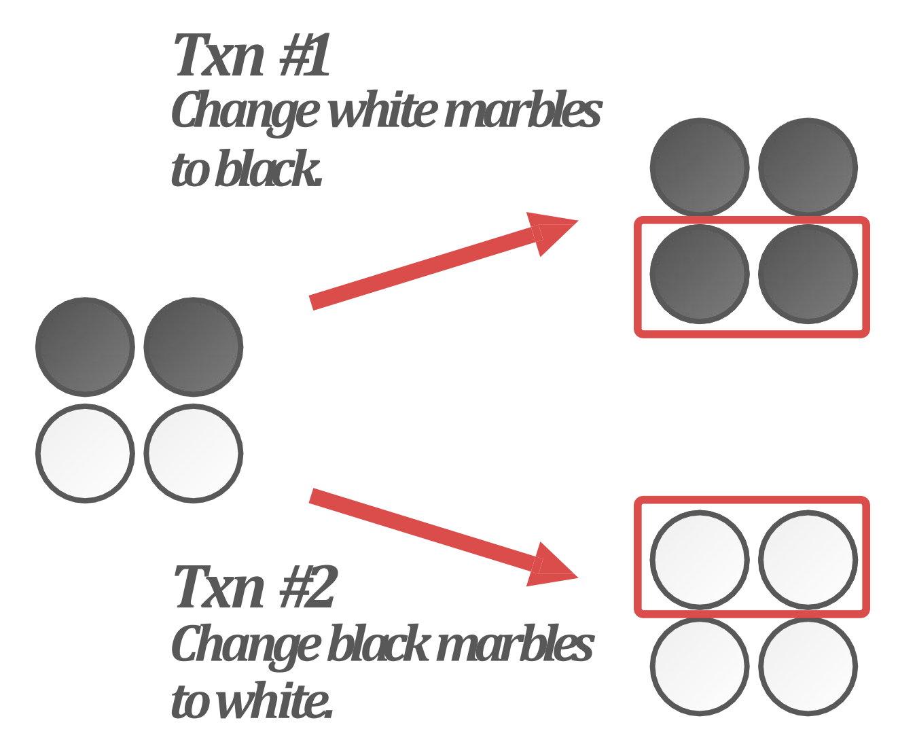</p>
<ul>
<li><span class="math math-inline"><span class="katex"><span class="katex-html" aria-hidden="true"><span class="base"><span class="strut" style="height:0.8333em;vertical-align:-0.15em;"></span><span class="mord"><span class="mord mathnormal" style="margin-right:0.13889em;">T</span><span class="msupsub"><span class="vlist-t vlist-t2"><span class="vlist-r"><span class="vlist" style="height:0.3011em;"><span style="top:-2.55em;margin-left:-0.1389em;margin-right:0.05em;"><span class="pstrut" style="height:2.7em;"></span><span class="sizing reset-size6 size3 mtight"><span class="mord mtight"><span class="mord mtight">1</span></span></span></span></span><span class="vlist-s">​</span></span><span class="vlist-r"><span class="vlist" style="height:0.15em;"><span></span></span></span></span></span></span></span></span></span></span> 은 본인의 snaphot database 에서는 아래 두개가 흰색이므로 이것을 검은색으로 바꿀 것이다. 이것이 위의 상황이다.</li>
<li><span class="math math-inline"><span class="katex"><span class="katex-html" aria-hidden="true"><span class="base"><span class="strut" style="height:0.8333em;vertical-align:-0.15em;"></span><span class="mord"><span class="mord mathnormal" style="margin-right:0.13889em;">T</span><span class="msupsub"><span class="vlist-t vlist-t2"><span class="vlist-r"><span class="vlist" style="height:0.3011em;"><span style="top:-2.55em;margin-left:-0.1389em;margin-right:0.05em;"><span class="pstrut" style="height:2.7em;"></span><span class="sizing reset-size6 size3 mtight"><span class="mord mtight"><span class="mord mtight">2</span></span></span></span></span><span class="vlist-s">​</span></span><span class="vlist-r"><span class="vlist" style="height:0.15em;"><span></span></span></span></span></span></span></span></span></span></span> 은 본인의 snapshot database 에서는 위 두개가 검은색이므로 이것을 흰색으로 바꿀 것이다. 이것이 아래의 상황이다.</li>
<li>이때 이 둘이 commit 을 하게 되면 결과적으로는 이렇게 된다.</li>
</ul>
<p>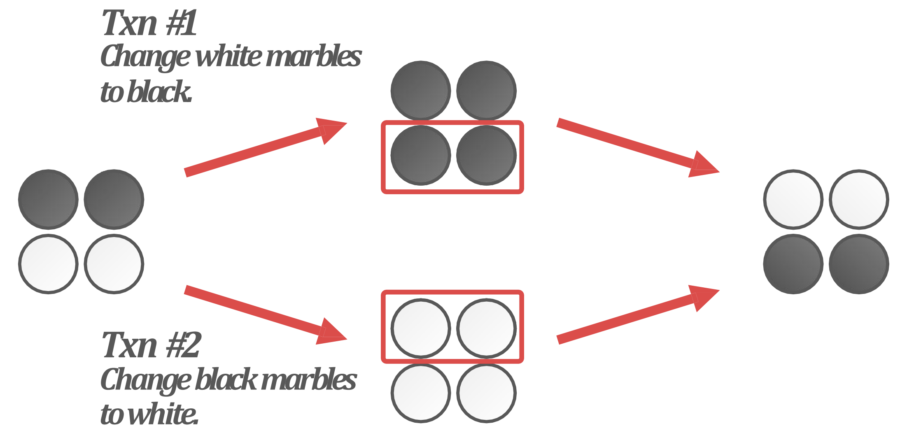</p>
<ul>
<li>맨 오른쪽이 최종 결과가 되는데, 이것은 어느 serial schedule 에서도 볼 수 없는 결과이므로 serializable 하지 않다.
<ul>
<li>이게 가능한 이유는 MVCC 에서는 WW conflict 에 대해서만 제약을 두는데, 이때는 WW conflict 가 일어나지 않기 때문이다.</li>
<li><span class="math math-inline"><span class="katex"><span class="katex-html" aria-hidden="true"><span class="base"><span class="strut" style="height:0.8333em;vertical-align:-0.15em;"></span><span class="mord"><span class="mord mathnormal" style="margin-right:0.13889em;">T</span><span class="msupsub"><span class="vlist-t vlist-t2"><span class="vlist-r"><span class="vlist" style="height:0.3011em;"><span style="top:-2.55em;margin-left:-0.1389em;margin-right:0.05em;"><span class="pstrut" style="height:2.7em;"></span><span class="sizing reset-size6 size3 mtight"><span class="mord mtight"><span class="mord mtight">1</span></span></span></span></span><span class="vlist-s">​</span></span><span class="vlist-r"><span class="vlist" style="height:0.15em;"><span></span></span></span></span></span></span></span></span></span></span> 은 아래 두개, <span class="math math-inline"><span class="katex"><span class="katex-html" aria-hidden="true"><span class="base"><span class="strut" style="height:0.8333em;vertical-align:-0.15em;"></span><span class="mord"><span class="mord mathnormal" style="margin-right:0.13889em;">T</span><span class="msupsub"><span class="vlist-t vlist-t2"><span class="vlist-r"><span class="vlist" style="height:0.3011em;"><span style="top:-2.55em;margin-left:-0.1389em;margin-right:0.05em;"><span class="pstrut" style="height:2.7em;"></span><span class="sizing reset-size6 size3 mtight"><span class="mord mtight"><span class="mord mtight">2</span></span></span></span></span><span class="vlist-s">​</span></span><span class="vlist-r"><span class="vlist" style="height:0.15em;"><span></span></span></span></span></span></span></span></span></span></span> 는 위 두개에 write 를 하므로 WW conflict 가 없다.</li>
<li>그래서 각자 write 를 하면 오른쪽의 모습이 나오는 것.</li>
</ul>
</li>
<li>근데 여기에는 RW conflict 가 있다. <span class="math math-inline"><span class="katex"><span class="katex-html" aria-hidden="true"><span class="base"><span class="strut" style="height:0.8333em;vertical-align:-0.15em;"></span><span class="mord"><span class="mord mathnormal" style="margin-right:0.13889em;">T</span><span class="msupsub"><span class="vlist-t vlist-t2"><span class="vlist-r"><span class="vlist" style="height:0.3011em;"><span style="top:-2.55em;margin-left:-0.1389em;margin-right:0.05em;"><span class="pstrut" style="height:2.7em;"></span><span class="sizing reset-size6 size3 mtight"><span class="mord mtight"><span class="mord mtight">1</span></span></span></span></span><span class="vlist-s">​</span></span><span class="vlist-r"><span class="vlist" style="height:0.15em;"><span></span></span></span></span></span></span></span></span></span></span> 가 write 하는 곳은 <span class="math math-inline"><span class="katex"><span class="katex-html" aria-hidden="true"><span class="base"><span class="strut" style="height:0.8333em;vertical-align:-0.15em;"></span><span class="mord"><span class="mord mathnormal" style="margin-right:0.13889em;">T</span><span class="msupsub"><span class="vlist-t vlist-t2"><span class="vlist-r"><span class="vlist" style="height:0.3011em;"><span style="top:-2.55em;margin-left:-0.1389em;margin-right:0.05em;"><span class="pstrut" style="height:2.7em;"></span><span class="sizing reset-size6 size3 mtight"><span class="mord mtight"><span class="mord mtight">2</span></span></span></span></span><span class="vlist-s">​</span></span><span class="vlist-r"><span class="vlist" style="height:0.15em;"><span></span></span></span></span></span></span></span></span></span></span> 가 읽은 곳이고, <span class="math math-inline"><span class="katex"><span class="katex-html" aria-hidden="true"><span class="base"><span class="strut" style="height:0.8333em;vertical-align:-0.15em;"></span><span class="mord"><span class="mord mathnormal" style="margin-right:0.13889em;">T</span><span class="msupsub"><span class="vlist-t vlist-t2"><span class="vlist-r"><span class="vlist" style="height:0.3011em;"><span style="top:-2.55em;margin-left:-0.1389em;margin-right:0.05em;"><span class="pstrut" style="height:2.7em;"></span><span class="sizing reset-size6 size3 mtight"><span class="mord mtight"><span class="mord mtight">2</span></span></span></span></span><span class="vlist-s">​</span></span><span class="vlist-r"><span class="vlist" style="height:0.15em;"><span></span></span></span></span></span></span></span></span></span></span> 가 write 하는 곳은 <span class="math math-inline"><span class="katex"><span class="katex-html" aria-hidden="true"><span class="base"><span class="strut" style="height:0.8333em;vertical-align:-0.15em;"></span><span class="mord"><span class="mord mathnormal" style="margin-right:0.13889em;">T</span><span class="msupsub"><span class="vlist-t vlist-t2"><span class="vlist-r"><span class="vlist" style="height:0.3011em;"><span style="top:-2.55em;margin-left:-0.1389em;margin-right:0.05em;"><span class="pstrut" style="height:2.7em;"></span><span class="sizing reset-size6 size3 mtight"><span class="mord mtight"><span class="mord mtight">1</span></span></span></span></span><span class="vlist-s">​</span></span><span class="vlist-r"><span class="vlist" style="height:0.15em;"><span></span></span></span></span></span></span></span></span></span></span> 가 읽은 곳이기 때문.</li>
<li>따라서 아래와 같은 precedence graph 가 그려지고, 이것이 cycle 이기 때문에 serializable 하지 않게 된다.</li>
</ul>
<pre><code class="mermaid">flowchart LR
	t1((txn1)) --> t2((txn2))
	t2((txn2)) --> t1((txn1))
</code></pre>
<h3 id="but-si">But… SI<a aria-hidden="true" tabindex="-1" href="#but-si" class="internal"> §</a></h3>
<ul>
<li>근데 그래도 이런 anomaly 는 극히 드물고, MVCC 가 주는 성능이 아주 좋기 때문에 보통 DBMS 에서는 MVCC 를 사용하고, SI 를 isolation level 로서 제공한다.</li>
<li>SI 가 포함된 isolation level 을 다시 그림으로 그려보면 아래와 같다.</li>
</ul>
<p>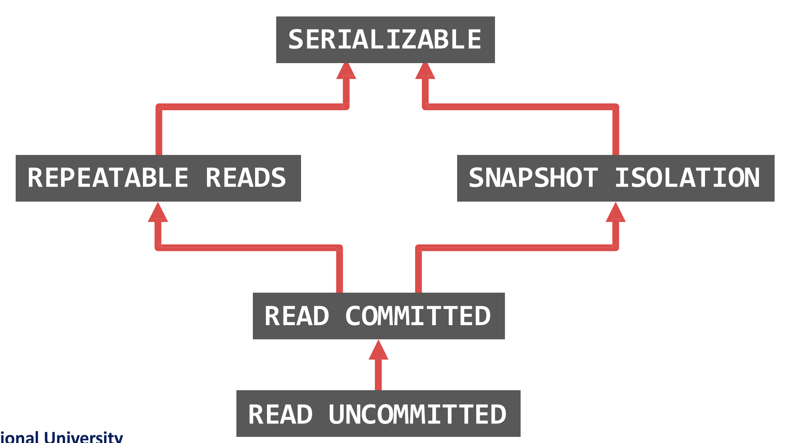</p>
<ul>
<li>사실상 Repeatable Read 에서도 Snapshot Read 를 사용하기에, 둘 간의 차이는 write 에서 기인하는 것이라고 한다.</li>
</ul></article></div><div class="right sidebar"><div class="graph "><h3>Graph View</h3><div class="graph-outer"><div id="graph-container" data-cfg="{&quot;drag&quot;:true,&quot;zoom&quot;:true,&quot;depth&quot;:1,&quot;scale&quot;:1.1,&quot;repelForce&quot;:0.5,&quot;centerForce&quot;:0.3,&quot;linkDistance&quot;:30,&quot;fontSize&quot;:0.6,&quot;opacityScale&quot;:1,&quot;showTags&quot;:true,&quot;removeTags&quot;:[]}"></div><svg version="1.1" id="global-graph-icon" xmlns="http://www.w3.org/2000/svg" xmlnsXlink="http://www.w3.org/1999/xlink" x="0px" y="0px" viewBox="0 0 55 55" fill="currentColor" xmlSpace="preserve"><path d="M49,0c-3.309,0-6,2.691-6,6c0,1.035,0.263,2.009,0.726,2.86l-9.829,9.829C32.542,17.634,30.846,17,29,17
	s-3.542,0.634-4.898,1.688l-7.669-7.669C16.785,10.424,17,9.74,17,9c0-2.206-1.794-4-4-4S9,6.794,9,9s1.794,4,4,4
	c0.74,0,1.424-0.215,2.019-0.567l7.669,7.669C21.634,21.458,21,23.154,21,25s0.634,3.542,1.688,4.897L10.024,42.562
	C8.958,41.595,7.549,41,6,41c-3.309,0-6,2.691-6,6s2.691,6,6,6s6-2.691,6-6c0-1.035-0.263-2.009-0.726-2.86l12.829-12.829
	c1.106,0.86,2.44,1.436,3.898,1.619v10.16c-2.833,0.478-5,2.942-5,5.91c0,3.309,2.691,6,6,6s6-2.691,6-6c0-2.967-2.167-5.431-5-5.91
	v-10.16c1.458-0.183,2.792-0.759,3.898-1.619l7.669,7.669C41.215,39.576,41,40.26,41,41c0,2.206,1.794,4,4,4s4-1.794,4-4
	s-1.794-4-4-4c-0.74,0-1.424,0.215-2.019,0.567l-7.669-7.669C36.366,28.542,37,26.846,37,25s-0.634-3.542-1.688-4.897l9.665-9.665
	C46.042,11.405,47.451,12,49,12c3.309,0,6-2.691,6-6S52.309,0,49,0z M11,9c0-1.103,0.897-2,2-2s2,0.897,2,2s-0.897,2-2,2
	S11,10.103,11,9z M6,51c-2.206,0-4-1.794-4-4s1.794-4,4-4s4,1.794,4,4S8.206,51,6,51z M33,49c0,2.206-1.794,4-4,4s-4-1.794-4-4
	s1.794-4,4-4S33,46.794,33,49z M29,31c-3.309,0-6-2.691-6-6s2.691-6,6-6s6,2.691,6,6S32.309,31,29,31z M47,41c0,1.103-0.897,2-2,2
	s-2-0.897-2-2s0.897-2,2-2S47,39.897,47,41z M49,10c-2.206,0-4-1.794-4-4s1.794-4,4-4s4,1.794,4,4S51.206,10,49,10z"></path></svg></div><div id="global-graph-outer"><div id="global-graph-container" data-cfg="{&quot;drag&quot;:true,&quot;zoom&quot;:true,&quot;depth&quot;:-1,&quot;scale&quot;:0.9,&quot;repelForce&quot;:0.5,&quot;centerForce&quot;:0.3,&quot;linkDistance&quot;:30,&quot;fontSize&quot;:0.6,&quot;opacityScale&quot;:1,&quot;showTags&quot;:true,&quot;removeTags&quot;:[]}"></div></div></div><div class="toc desktop-only"><button type="button" id="toc"><h3>Table of Contents</h3><svg xmlns="http://www.w3.org/2000/svg" width="24" height="24" viewBox="0 0 24 24" fill="none" stroke="currentColor" stroke-width="2" stroke-linecap="round" stroke-linejoin="round" class="fold"><polyline points="6 9 12 15 18 9"></polyline></svg></button><div id="toc-content"><ul class="overflow"><li class="depth-0"><a href="#mvcc" data-for="mvcc">MVCC</a></li><li class="depth-0"><a href="#mvcc-example" data-for="mvcc-example">MVCC Example</a></li><li class="depth-0"><a href="#tuple-format" data-for="tuple-format">Tuple Format</a></li><li class="depth-0"><a href="#version-storage" data-for="version-storage">Version Storage</a></li><li class="depth-1"><a href="#storage-layout" data-for="storage-layout">Storage Layout</a></li><li class="depth-1"><a href="#version-order" data-for="version-order">Version Order</a></li><li class="depth-1"><a href="#dbmss-choices" data-for="dbmss-choices">DBMS's Choices</a></li><li class="depth-0"><a href="#gc" data-for="gc">GC</a></li><li class="depth-1"><a href="#gc-target-visibility-dead-zone" data-for="gc-target-visibility-dead-zone">GC Target: Visibility, Dead zone</a></li><li class="depth-1"><a href="#tuple-level-gc" data-for="tuple-level-gc">Tuple-level GC</a></li><li class="depth-0"><a href="#snapshot-isolation-si" data-for="snapshot-isolation-si">Snapshot Isolation (SI)</a></li><li class="depth-1"><a href="#snapshot-read" data-for="snapshot-read">Snapshot Read</a></li><li class="depth-1"><a href="#first-committer-wins-rule" data-for="first-committer-wins-rule">First-Committer-Wins Rule</a></li><li class="depth-1"><a href="#write-skew" data-for="write-skew">Write Skew</a></li><li class="depth-1"><a href="#but-si" data-for="but-si">But... SI</a></li></ul></div></div><div class="backlinks "><h3>Backlinks</h3><ul class="overflow"><li><a href="../../../../../gardens/database/originals/bkms01.fall.2024.gsds.snu.ac.kr/(SNU-GSDS)-Bigdata-and-Knowledge-Management-Systems-1" class="internal">(SNU GSDS) Bigdata and Knowledge Management Systems 1</a></li></ul></div></div></div><footer class><hr/><p>Created with <a href="https://quartz.jzhao.xyz/">Quartz v4.1.0</a>, © 2025</p><ul><li><a href="https://github.com/haeramkeem">GitHub</a></li><li><a href="https://www.linkedin.com/in/haeram-kim-277404220">LinkedIn</a></li><li><a href="mailto:haeram.kim1@gmail.com">Email</a></li></ul></footer></div></body><script type="application/javascript">// quartz/components/scripts/quartz/components/scripts/callout.inline.ts
function toggleCallout() {
  const outerBlock = this.parentElement;
  outerBlock.classList.toggle(`is-collapsed`);
  const collapsed = outerBlock.classList.contains(`is-collapsed`);
  const height = collapsed ? this.scrollHeight : outerBlock.scrollHeight;
  outerBlock.style.maxHeight = height + `px`;
  let current = outerBlock;
  let parent = outerBlock.parentElement;
  while (parent) {
    if (!parent.classList.contains(`callout`)) {
      return;
    }
    const collapsed2 = parent.classList.contains(`is-collapsed`);
    const height2 = collapsed2 ? parent.scrollHeight : parent.scrollHeight + current.scrollHeight;
    parent.style.maxHeight = height2 + `px`;
    current = parent;
    parent = parent.parentElement;
  }
}
function setupCallout() {
  const collapsible = document.getElementsByClassName(
    `callout is-collapsible`
  );
  for (const div of collapsible) {
    const title = div.firstElementChild;
    if (title) {
      title.removeEventListener(`click`, toggleCallout);
      title.addEventListener(`click`, toggleCallout);
      const collapsed = div.classList.contains(`is-collapsed`);
      const height = collapsed ? title.scrollHeight : div.scrollHeight;
      div.style.maxHeight = height + `px`;
    }
  }
}
document.addEventListener(`nav`, setupCallout);
window.addEventListener(`resize`, setupCallout);
</script><script type="module">
          import mermaid from 'https://cdn.jsdelivr.net/npm/mermaid/dist/mermaid.esm.min.mjs';
          const darkMode = document.documentElement.getAttribute('saved-theme') === 'dark'
          mermaid.initialize({
            startOnLoad: false,
            securityLevel: 'loose',
            theme: darkMode ? 'dark' : 'default'
          });
          document.addEventListener('nav', async () => {
            await mermaid.run({
              querySelector: '.mermaid'
            })
          });
          </script><script src="https://cdn.jsdelivr.net/npm/katex@0.16.7/dist/contrib/copy-tex.min.js" type="application/javascript"></script><script src="https://www.googletagmanager.com/gtag/js?id=G-N68CCP1QHG" type="application/javascript"></script><script src="../../../../../postscript.js" type="module"></script></html>